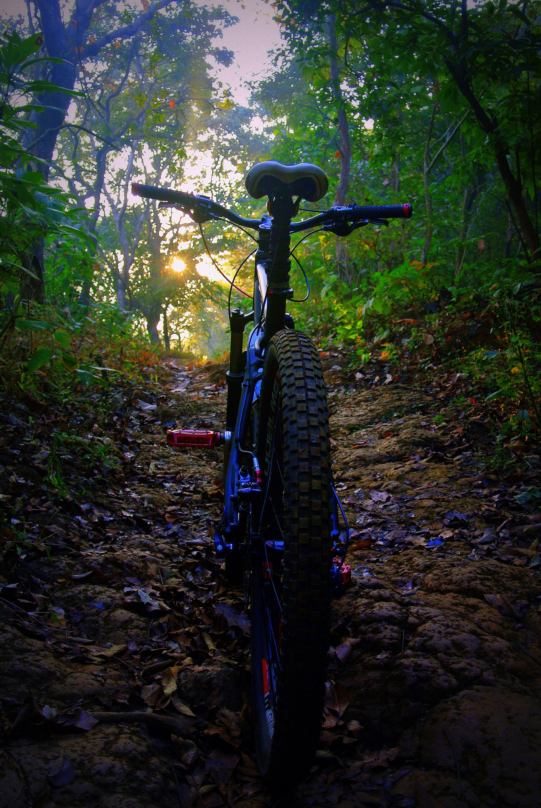
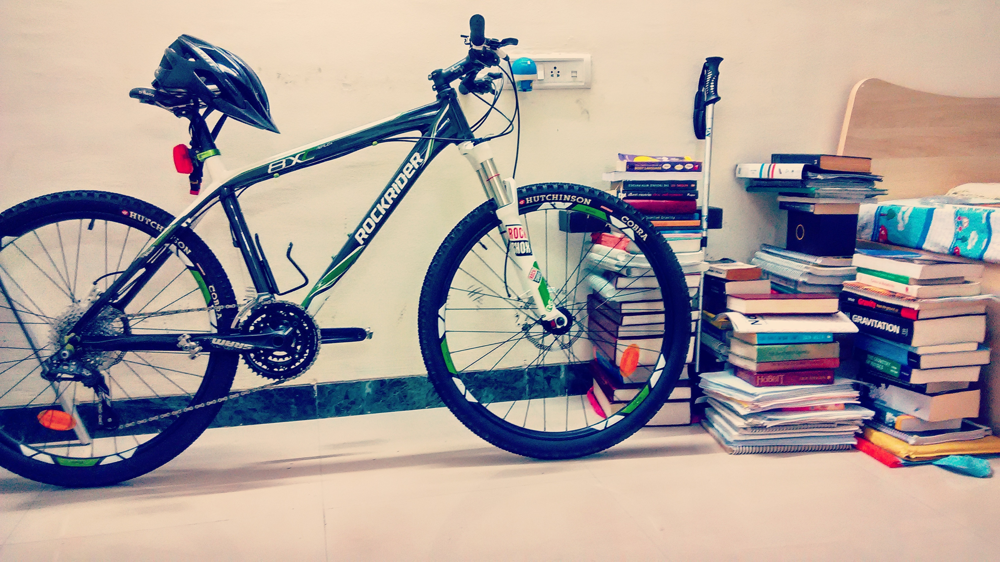
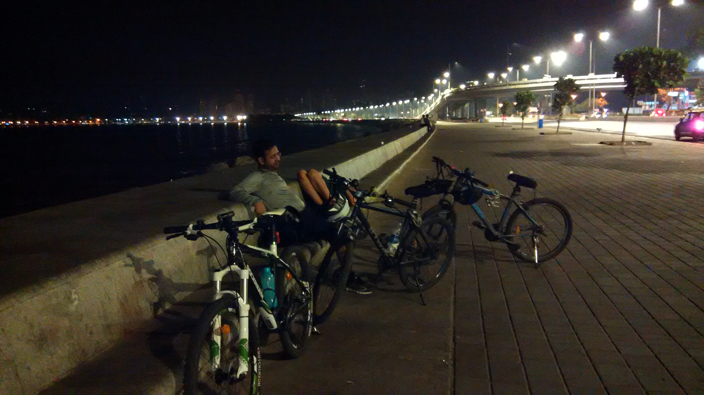
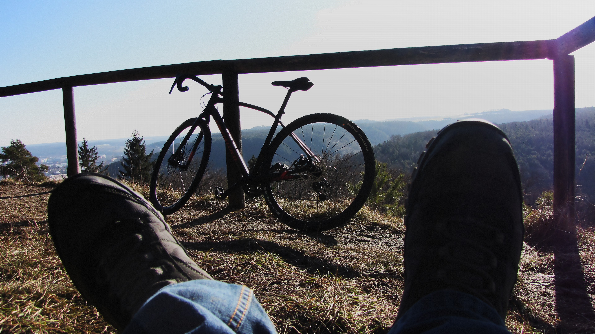

My Incarnations
This was the first time I had an aching for biking and the urge to grab some really cool bike and probably some subconscious thought of attaining nirvana. I really mean 'aching' and 'urge' ! I possessed a decent bike then, even a bit costlier as compared to what most people would have spent on a bike in India. I was living in Mumbai as an undergraduate student and had no source of income what-so-ever. So the only way to enter the biking culture was from my own pocket, whatever I could save I did! I saved from my scholarship, I saved from my summer internships and went even further, to ask my cousin some amount that I couldn't makeup for. He offered me generously and it is only very recently that I repaid him, also telling him how I couldn't thank him enough. I think, if not for him it would have been very difficult for me to have entered the cycling culture or at least that's what I told my cousin as a gesture of gratitude.
One of my coolest incarnations! The CUBE AMS PRO made in Germany. Fitted with Crank Brothers Joplin seat post. In layman's terms it meant I could change the seat post height with the click of button on the handle. That's the coolest accessory I ever saw and I ever used. For more cool features read here. I came to possess it from an English friend who was working at the U.K. embassy in Mumbai and was planning to buy a NUKEPROOF, another amazing mountain bike brand. I was on cloud nine, became a regular biker in and around Mumbai and made a bunch of biking friends. I did some gnarly rides in Sanjay Gandhi National Park in Borivali, up and beneath the gorgeous hills in Thane, plentiful city rides and many more that I seemed to have forgotten, it's been five years now. I did not possess this for long, maybe about six months or so. The bike was a bit large for me and over the months of riding I realised I could do more crazy stuff only if I had a bike that was just about my size. Luckily I was in Bangalore then and found a German girl interested in buying my bike. I fixed everything to transfer her my bike.
I was very fortunate to find this one, a B'twin 8XC full carbon MTB. Much synchronously around the time I sold my previous bike to the German girl I was contacted by a person who used to work in the Decathlon store in Bangalore. When he was leaving his job there he was offered to buy a bike with some discount and this is the bike he didn't need and later on sold it to me brand new. It was much lighter, about 8 kg in total and was the right size for me. I have since then possessed it and never had the thought to ever depart from it. I explored new trails and redid all the gnarly lines I had discovered on the CUBE. Everyone who looked at it was awe struck, I was awe struck every time I saw it. I rode it like I could fly. The more I rode it the more it became a part of me and the more it showed me things I had never felt. I spent my free time tendering it and riding it. Sinking within myself I found the connection to this world.

"A bicycle has a soul. If you tend to love it, it will give you emotions that you'll never forget."

I went to Cardiff to do my masters thesis in the summer of 2015. I was to stay there for about six months or so. I knew I had to a buy a bike. It had become a part of me and I felt incomplete without it. I found this lovely refurbished hardtail MTB at Cardiff Cycle Workshop. I enjoyed riding it in Wales. I mostly used it for commuting to the office. On weekends I took it everywhere it could go that was not close to the office, somewhere in the woods along the Taff river, up and down the welsh hills and farms. When I left for India I gave this bike to a good friend of mine who had just started his PhD there.
One of the cool things my biking friends and I did when I was back in Mumbai was to ride from Bandra to Marine Drive at midnight and lay there until dawn. In the morning have chai and breakfast in Churchgate and ride back to Bandra. On numerous occasions we city biked just for the food. It is one of the most memorable things I did with my friends. We enjoyed Misal Pav in Thane and bakery from the Iranian cafes and when doing off road we enjoyed the Pithla Bhakri, if we could find some.

This beauty I got when I started my doctoral studies in the autumn of 2016 in Germany. This is what I am riding currently, a SPECIALIZED DIVERGE DSW ELITE which is a cyclocross bike. My taste for biking has always been more adventurous and crazy rides and that explains why I am always around with an off-road bike. It is said that your personality matches with what you ride. Probably this is termed as 'bikeology'! I don't know! But this is what it says for a person riding an off-road bike, '' Adventure is out there and you’re gunnin’ to get it! You’re not afraid to take the road less traveled in this crazy-beautiful life… or make a way where there isn’t one. You are a level-headed problem-solver who handles life in much the same way you do your rides… keeping your head up and tackling one challenge at a time. Despite a potentially tough exterior, you have a super-soft spot on the inside for humankind – a real compassion for the well-being of others. You love new experiences, and while there are a lot of types of bikes out there to try, you’re likely to stick with the one that’s going to give you a good challenge and make you a stronger rider. '' [Are you What You Ride?] It was the first time I rode a bike in snow. I was quite excited about it. Though riding on fresh snow is okay but riding on frozen ice is extremely gnarly! It was a crazy experience for me and luckily I had asked the guys at the bike shop to change the original road tires for tires with more treads. Highly treaded tires are good for winters and rains as they provide more contact with the ground and less chance of slipping.
Spring came around march and I started riding my bike uphill, spent time basking in the sun and enjoyed the time passing by once a while, enjoying the freedom I had gained and experienced by riding a bike. Later I did some road training rides with some Italian friends and the coolest thing I learnt was the peloton formation which in simple terms is a trick used by professional road bikers to break the wind speed. I have continued riding my bike only wishing for more, never to stop and hoping to discover more trails to my inner self.